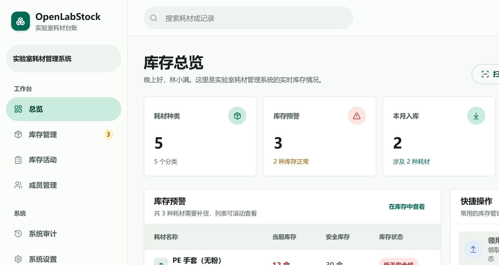

公开预览 · 开源 · 可自主部署
OpenLabStock
让实验室库存
告别“差不多还有”。
把领用、入库、盘点、预警与责任归属放进同一个安静的工作台。每一次变化都有流水，每一个数字都有来处。
- 状态
- Public Preview
- 许可
- AGPL-3.0-only
- 终端
- 手机 / 平板 / 桌面
openlabstock.com

!
库存提醒3 个品类需要核对补货
LAB INVENTORY, WITH A MEMORY
01
01 / 现实
同一间实验室，
库存信息却总是对不上。
表格显示仍有库存，柜子里却已经见底；有人刚领走还没登记，盘点时又只能靠记忆补记。问题不在于谁不认真，而在于登记没有发生在库存变化的当下。
耗材库存_最终版_v7.xlsx
3 人正在编辑
耗材表格现场状态
移液枪头25 盒18 盒?
无水乙醇10 瓶7 瓶?
PE 手套30 盒12 盒!
“昨天有人拿过，但还没来得及改表。”
01领用发生在柜子前
电脑却在办公室。登记多走一步，就容易变成“晚点再补”。
02盘点只留下一个结果
数字改对了，却说不清差额何时出现、为什么出现。
03提醒依赖某个人记得
安全库存没有主动露出，缺货往往在实验开始前才被发现。
04共享不等于可追溯
谁领了、领到哪里、属于哪个组织，难以形成可信历史。
无水乙醇
500 mL / 瓶
OpenLabStock · 化学试剂
领用 / 使用登记
普通耗材登记数量，探针等耗材进入具体盒子或位置
×
↓ 入库
↑ 领用 / 使用
微信扫一扫
02 / 柜子前的工作流
微信扫一扫，
一步到登记页。
二维码绑定耗材的不可变 ID。无需在长列表里搜索，也不必先打开电脑，扫码即可定位耗材并进入现有登记表单。
- 01
生成并贴上专属标签
单张下载或批量打印，名称变化也不会让二维码失效。
- 02
用微信或系统相机扫描
同一个网址适配手机浏览器，直接找到对应耗材。
- 03
确认数量、去向与时间
保存后才生成流水，避免“扫一下就误扣库存”。
03 / 产品能力
不是一张更漂亮的表格。
是一套可追溯的库存秩序。
从普通耗材到探针等可复用物品，从成员领用到组织核算，核心规则都落在系统里。
真实产品界面库存管理 / 桌面端
03.2 / 核心能力
把库存规则，
变成团队的共同语言。
从一盒手套到一支探针，六项能力共同保证数字可信、历史清楚、操作顺手。
01流水不可变
每次入库、领用、盘点差额和纠错都形成历史事实，不用静默覆盖过去。
02Excel 盘点兼容
导入“目标当前库存”，系统自动生成差额流水，保留现有盘点习惯与审计线索。
03安全库存预警
逐耗材设置阈值，低库存直接出现在总览与通知入口，补货不再只靠记忆。
04组织消耗核算
流水保存发生时的组织快照。成员调组、组织改名，不会改写历史归属。
05普通与状态化库存
既管理“还有多少盒”，也管理探针等物品的盒、位置、状态和使用范围。
06清晰的权限边界
所有者、系统管理员、库存管理员和普通成员，由后端决定各自能做什么。
当前库存每一次变化都必须对应流水，而不是直接改掉一个数字。
现场登记手机端保持紧凑，常用动作在柜子前就能顺手完成。
历史事实成员、组织、耗材名称之后可以变化，旧流水仍保留当时快照。
数据边界数据有清晰的导出、备份与迁移路径，选择哪种服务都能保留主动权。
05 / OPEN SOURCE
开放代码，
也开放选择。
OpenLabStock 采用 AGPL-3.0-only。核心代码、关键库存规则与数据边界公开可审查；团队既可自主部署，也能选择省心的托管、升级与专业支持服务。
AGPL-3.0-only代码可审查部署可选择数据可迁移
OPENLABSTOCK / OPEN SOURCE公开可审查
01 / CODE代码公开核心功能在公开许可下持续演进，技术实现可以检查。
02 / RULES规则透明库存、权限与流水逻辑说得清楚，关键边界不靠黑箱。
03 / CHOICE部署可选可以自主部署，也可以选择托管、升级与专业支持。
04 / PORTABILITY数据可迁移保留清晰的导出与备份路径，服务选择不等于数据锁定。
当前为公开预览版；先用合成数据评估，再按部署文档进入正式环境。
06 / START HERE
从看懂，到真正用起来。
不需要先搭一套复杂基础设施。选择最接近当前阶段的入口，沿着同一份公开文档继续。
01
先试用
克隆仓库，在本机用合成数据启动，先体验扫码、入库、领用和盘点流程。
打开快速启动 ↗
02
正式部署
单机可选 systemd 或 Docker；数据库和备份独立保存，升级前自动备份，失败可回滚。
查看部署文档 ↗
03
参与贡献
先阅读贡献规则和安全渠道。修复问题、补充文档和提出建议都欢迎，核心代码按公开流程维护。
了解贡献方式 ↗
OPENLABSTOCK
让下一次盘点，
从可信的日常记录开始。
为需要认真管理库存，又不想把工作流变复杂的实验室而做。